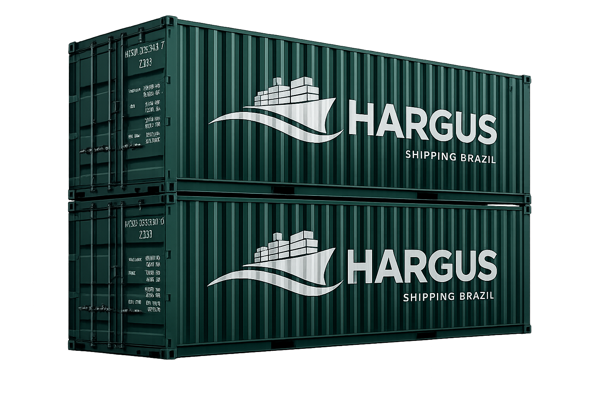

Agenciamento de Cargas
Gestão e coordenação da operação de transporte.
Agenciamento de cargas e soluções logísticas
Soluções logísticas completas com agilidade, segurança e eficiência para conectar sua empresa ao mundo.
Na HARGUS, transformamos desafios logísticos em soluções inteligentes, conectando empresas às melhores oportunidades com eficiência e confiança.

Sobre a Hargus
A Hargus nasceu para tornar a logística mais simples, eficiente e confiável. Atuamos no agenciamento de cargas, conectando empresas às melhores soluções de transporte e comércio exterior.
Mais do que movimentar cargas, buscamos entender cada operação, encontrar o melhor caminho e acompanhar cada etapa, construindo relações de confiança e parceria com nossos clientes.
Com foco em sucesso do cliente, agilidade e confiança, trabalhamos para transformar desafios logísticos em soluções que geram valor para o negócio.
Conectamos você ao seu destinoServiços
Atuamos em todas as etapas da cadeia logística para entregar a melhor experiência e resultados para o seu negócio.
Gestão e coordenação da operação de transporte.
Soluções de transporte para movimentação de cargas no Brasil e no exterior.
Orientação e suporte em processos e operações aduaneiras.
Suporte estratégico e operacional nas operações de comércio exterior.
Gestão dos processos de desembaraço junto aos órgãos competentes.
Suporte para operações sujeitas às exigências e regulamentações da ANVISA.
Diferenciais
O cliente está no centro das nossas decisões. Entendemos cada necessidade para oferecer soluções que realmente contribuam para o sucesso da sua operação e do seu negócio.
Na logística, tempo é essencial. Trabalhamos com respostas rápidas, comunicação eficiente e decisões ágeis para que sua carga siga sempre pelo melhor caminho.
Construímos relações baseadas em transparência, compromisso e responsabilidade. Acompanhamos cada operação de perto para que nossos clientes tenham segurança em cada etapa.
Buscamos constantemente as melhores soluções, combinando qualidade, eficiência e atenção aos detalhes para entregar uma experiência superior.
Como Trabalhamos
Conhecemos sua operação, carga, origem, destino e necessidades específicas.
Analisamos as opções disponíveis e buscamos a alternativa mais adequada para sua operação.
Cuidamos da contratação e coordenamos os envolvidos para garantir uma operação eficiente.
Mantemos você informado durante todo o processo, garantindo maior controle e segurança.
Acompanhamos a operação até sua conclusão, buscando garantir que tudo aconteça conforme planejado.
Nossa equipe está pronta para entender sua necessidade e oferecer a melhor solução para o seu negócio.